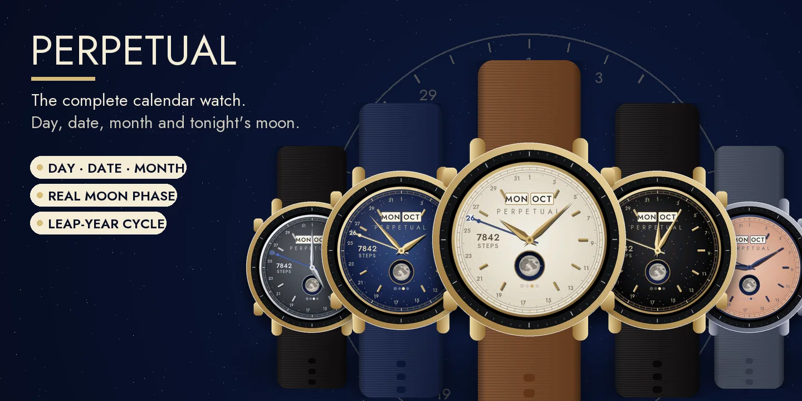
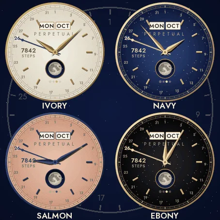
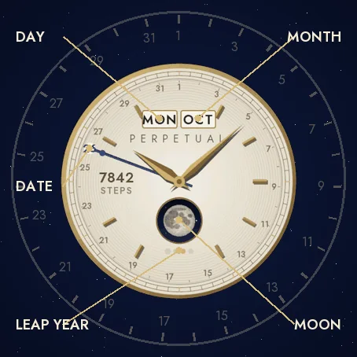
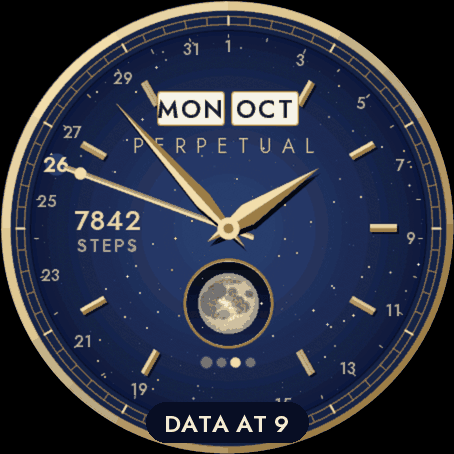
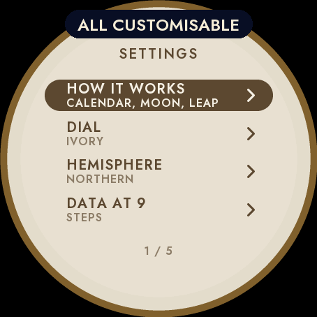
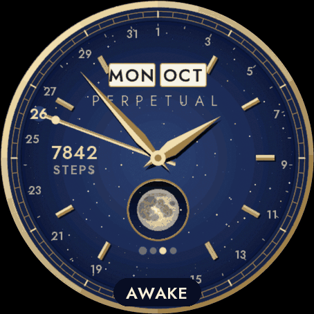

Settings on the watch
Hold UP, pick Watch Face, select Perpetual, press START, then Customize. The menu is drawn like the dial: a short How it works guide, the dial, the hemisphere, the data at 9 and the always-on brightness. The same settings are in Garmin Connect if you prefer the phone.
The complete calendar
A dress watch in the tradition of perpetual calendars: the day and the month in two windows at 12 o'clock, the date pointed by a blued steel hand on the ring of 31 days, and today's date picked out on the ring. Four dots under the moon show where the year sits in the four-year leap cycle.
Tonight's real moon
A porthole at 6 o'clock shows the moon as it is tonight, computed on the watch from the mean lunar month (accurate to about half a day), drawn as seen from the northern or the southern hemisphere.
A dress watch
A polished case, a railway minute track, applied faceted markers and faceted dauphine hands. Five dials: Ivory guilloché with gold, Navy aventurine with gold, Slate guilloché with steel, Salmon guilloché with blued steel, and Ebony aventurine with gold.
Data at 9
One value of your choice at 9 o'clock, or none for a pure dial: steps, heart rate, watch battery, Body Battery, calories, floors, distance, intensity minutes, notifications or temperature. If your watch has no value, it shows -- rather than a made-up number. Nothing leaves the watch.
Always-on
A separate always-on design on a black screen: the minute ring, the markers, the day and the month, the lit part of the moon and the hands in grey. It shifts slightly every minute to protect the screen. A brighter option is in the menu.
Compatible with the Garmin AMOLED watches listed below. English only. Questions or a watch you would like to see supported: use the support e-mail on this page.